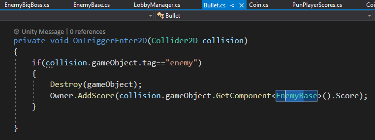
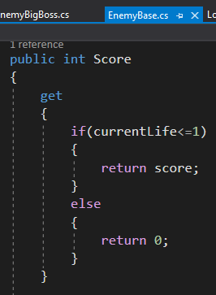

First Android Game - Part 13 - Adding ScoresAug 9, 2023This is part 13 of making my first Android Game. If you missed part12, you can find it hereI want to add scores to the player only when the player has destroyed the enemy. Currently the score is added everytime the bullet hits the enemy. In Bullet.cs, I made no changes where the bullet would check if it collided with the enemy

In EnemyBase.cs, I made changes to the Score Property of Get. Instead of returning the score, I would check if the currentLife is greater then or equal to 1. If yes, then return the score, otherwise return 0

After testing, only the player that destroys the enemy and only if the enemy gets destroyed will the score get added to that player. Check out the youtube video to see the results!Recent blogsSee all blogs